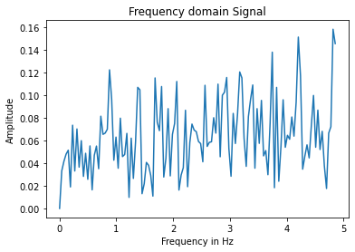
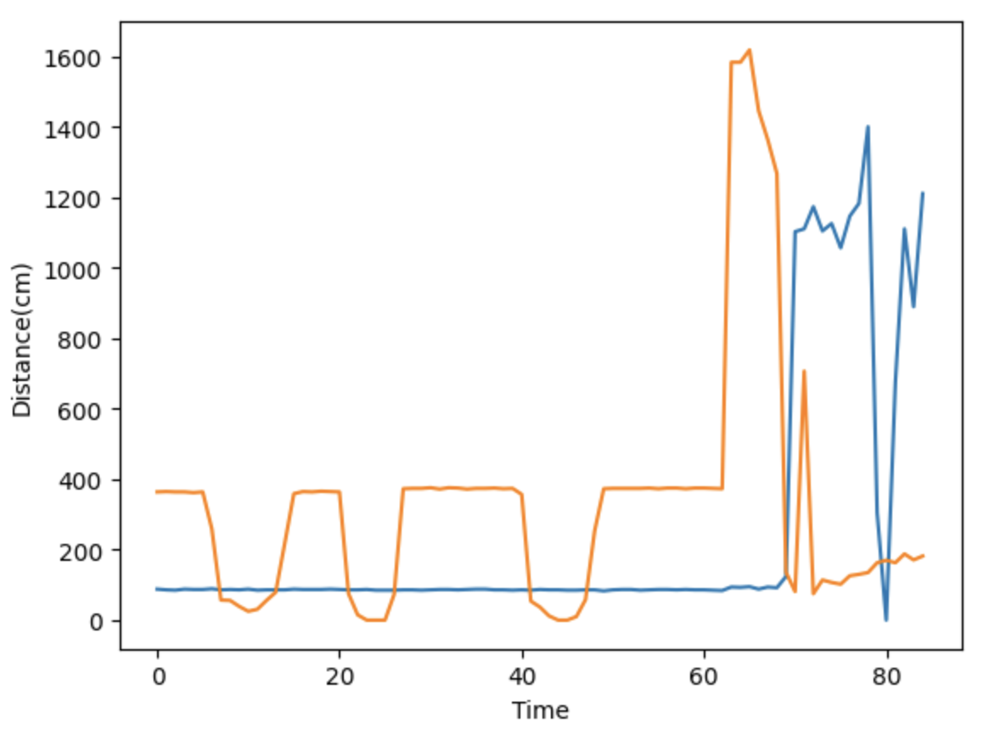
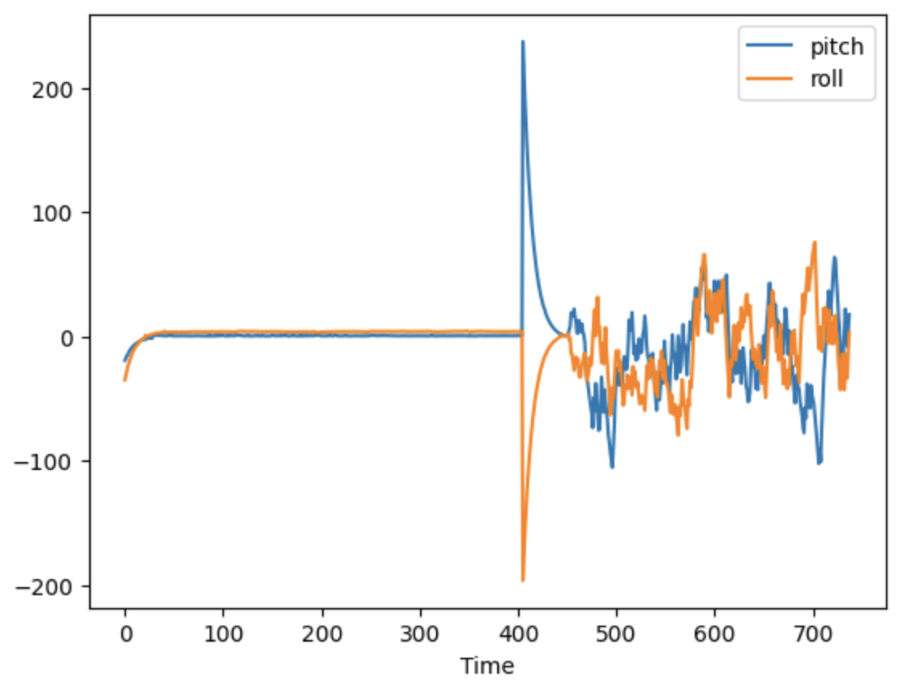

Lab 4: Internal Measurement Unit
Parts List:
- SparkFun RedBoard Artemis Nano 1
- 9DOF IMU sensor 1
- QWIIC Breakout board & Qwiic connector 1
- Force1 RC car 1
- Li-Ion 3.7V 850mAh battery 1
Set up the IMU
For hardware setup, I simply connected the IMU to the Artemis using a QWICC connector and breakout board as shown below:

I installed the SparkFun 9DOF IMU Breakout - ICM 20948 - Arduino Library and opened the example code Example1_Basics, which displays the IMU accelerometer, gyroscope, magnetometer, and temperature readings. In the setup section of this code, AD0_VAL is defined by default as 1. The AD0_VAL is used to change the default address of one IMU in case multiple IMUs are connected using the same I2C bus. Since we only have 1 IMU, the default value of 1 is used. When running the example code, I noticed a few things about the accelerometer and gyroscope readings. When I changed the orientation of the board, the gyroscope readings would increase and then decrease back to zero, since they reflect the angular velocity. The acceleration, on the other hand, measures linear acceleration and stays constant after the movement. I also observed that one of the acceleration readings was always very high while I kept the other two close to zero, which reflects the gravitational pull on whichever axis I orient in that direction.
After testing the code, I added a blinking onboard LED to indicate the IMU was finished setting up which will be used for debugging purposes.
Accelerometer
Using the following equations, I calculated the roll and pitch of the IMU using accelerometer data:
pitch_a = atan2(myICM.accY(),myICM.accZ())*180/M_PI
roll_a = atan2(myICM.accX(),myICM.accZ())*180/M_PI;
I observed the values to be accurate within ±2 degrees, and the outputs at {-90, 0, 90} degrees are shown below:

To reduce the noise in pitch and roll readings, I took a Fourier transform of the data and implemented a low pass filter. I used 256 data points with a sampling frequency of 9.7 values/second and referred to the website https://www.alphabold.com/fourier-transform-in-python-vibration-analysis/. Below is the FFT plot I generated.

Although it looks like there is a lot of fluctuation, this is actually due to the scale
of the axes; the y-axis range is very small, so the fluctuation in the readings is actually much lower than they appear,
and there wasn't a clear frequency where a lot of noise was present. I still set up a low pass filter using the equations from
class,
pitch_a_LPF[n] = alpha*pitch_a + (1-alpha)*pitch_a_LPF[n-1];
pitch_a_LPF[n-1] = pitch_a_LPF[n];
After applying the LPF, the resulting data was more smooth and the effect of noise was reduced, as shown below:
Gyroscope
Using the following equations, I calculated the pitch, roll, and yaw from the gyroscope data:
dt = (micros()-last_time)/1000000.;
last_time = micros();
pitch_g = pitch_g + myICM.gyrX()*dt;
roll_g = roll_g + myICM.gyrY()*dt;
yaw_g = yaw_g + myICM.gyrZ()*dt;
I observed that when I rotated the board about either the x, y, or z axis as indicated by the diagram on the board,
the pitch, roll, or yaw value would increment or decrement continuously. In the video below, the first, second, and third
value printed to the serial monitor represent the pitch, roll, and yaw values respectively. You can see that when I only
rotate the board on one of its axes, only one value changes drastically while the other two remain relatively constant:
The gyroscope data can be used to perform dead reckoning calculations, but a drawback of this method is the accumulation
of error over time. On the other hand, accelerometer measurements do not risk bias due to unbounded error since the force
of gravity is constant; however, the measurements are more susceptible to noice, hence why we built a low pass filter. In order
to combine the benefits of both the accelerometer and gyroscope, I created a complementary filter using the below equations:
pitch = (pitch+myICM.gyrX()*dt)*0.9 + pitch_a*0.1;
roll = (roll+myICM.gyrY()*dt)*0.9 + roll_a*0.1;
As you can see from the video, the combined measurements are very stable (not as much noise as the accelerometer data) and relatively accurate (no drifting of values as seen with the gyroscope data).
Sample Data
With the complementary-filtered data in hand, the next step is to collect rapid samples of data and transmit the values over bluetooth from the Artemis board on the robot to my laptop. First, I deleted any blocking statements from my code and measured how quickly I could sample new values. I found that the time difference between each reading ranges from 8 to 15ms.
In the above video, I am sending IMU readings from the Artemis to my laptop. The next step is to integrate both IMU and TOF sensor readings and send them both concurrently to get a fuller picture of the robot's positioning at any given time. I decided to do this using two separate arrays, one for storing TOF data and one for IMU data. This is because TOF readings are less frequent than IMU readings, so separating them allows me to read in IMU data more frequently.
I am sending over data from the Artemis to my laptop as soon as I receive a data reading, but an alternative approach would be to store a large quantity of data on the Artemis and then send the data altogether after sampling. This method would be constrained by the maximum storage of the Artemis board, which is 384kB of RAM. I would have to store one time stamp and three IMU readings every 1/10th of a second, and one time stamp and two TOF readings every half a second or so. Time stamps are recorded using the millis() function in Arduino, which returns a value of the long int type, and IMU readings are floats while TOF readings are integers. According to Arduino, long ints are 4 bytes, ints are 2 bytes, and floats are 4 bytes. Thus, every second of data would take up 10*(4+3(4)) + 2*(4+2(2)) = 176 bytes. It would take around 2,181 seconds to use up all of the Artemis's RAM this way.
Cut the Coord
Next, I finally integrate the sensors and Artemis board with the robot! I used a 850mAh battery to power the robot's motor drivers, and I used the other 650mAh mattery to power the Artemis. The voltage supply of both batteries is 3.7V, and the reason I chose to use the larger capacity battery for the motors is because they consume power more quickly than the board. Here is a picture of the hardware setup with the battery attached:

Record a Stunt
Lastly, I strapped the whole setup to my robot and took it for a spin. First, I drove the car as-is straight out of the box in order to get a feel for what it can do. I was surprised at how much it lived up to the title of a "fast robot," but, as you can see, I was a natural at driving it nonetheless.
Next, I powered the Artemis, TOF, and IMU sensors and recorded data to my laptop as I taped them to the robot and performed some stunts. I observed that I could flip the car over by driving quickly in one direction and then abruptly going in the opposite direction. Combining this with rapidly spinning made for some cool combos.
Here is the TOF and IMU data from my test run:
 